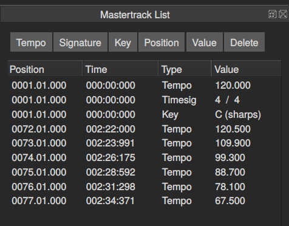
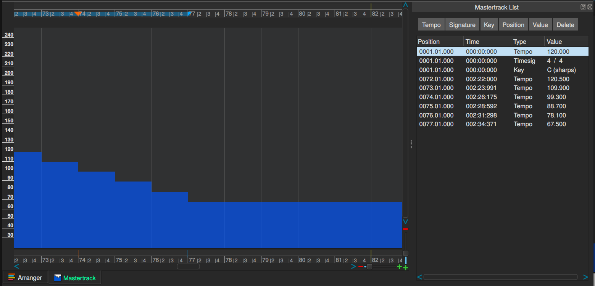

Editor de la Pista Maestra
La pista maestra (mastertrack) contiene el tempo, el compás y la clave de su canción. Todos estos valores se pueden cambiar a su gusto en cualquier momento durante la canción. Hay dos editores de pistas maestras, el** editor de listas** (List Editor) y el editor gráfico (Graphical Editor).

Este ejemplo muestra el editor de listas de la pista maestra (Mastertrack List Editor) con todos los parámetros establecidos inicialmente al principio de la canción, pero también una serie de cambios de tempo más adelante. Cada elemento de la lista es un evento en la pista maestra.
Los botones en la parte superior del cuadro de diálogo se pueden utilizar para modificar las entradas. También se puede hacer doble clic para lograr lo mismo.

Este es el mismo ejemplo, pero mostrando el editor gráfico de la pista maestra (Mastertrack graphical editor). Se ha creado gráficamente una rampa de “tempo” donde la canción se ralentiza.
Un error común de los principiantes son los cambios de tempo que se agregan a la pista maestra por error. Esto se puede remediar seleccionando la línea errónea en el editor de listas de Mastertrack y haciendo clic en el botón Eliminar (Delete).